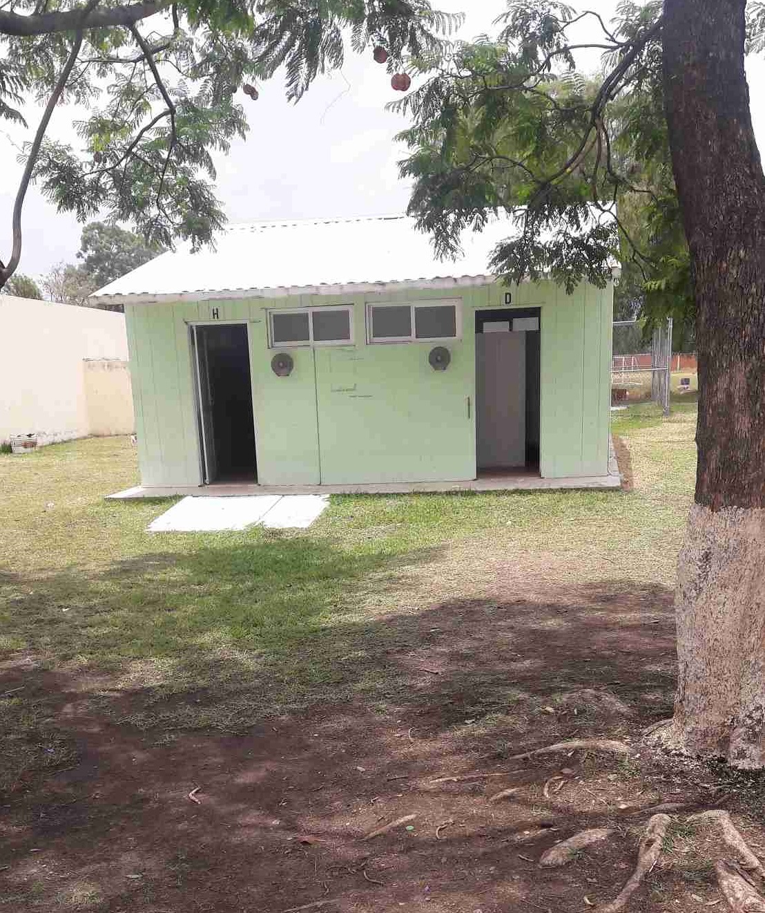
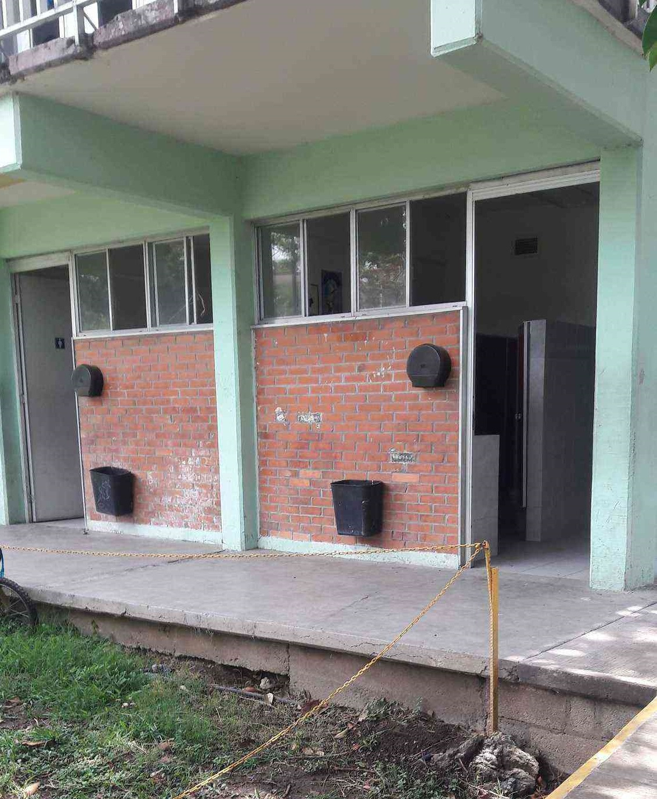
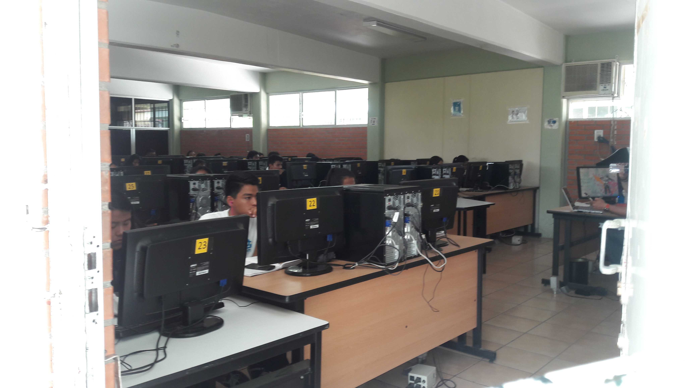
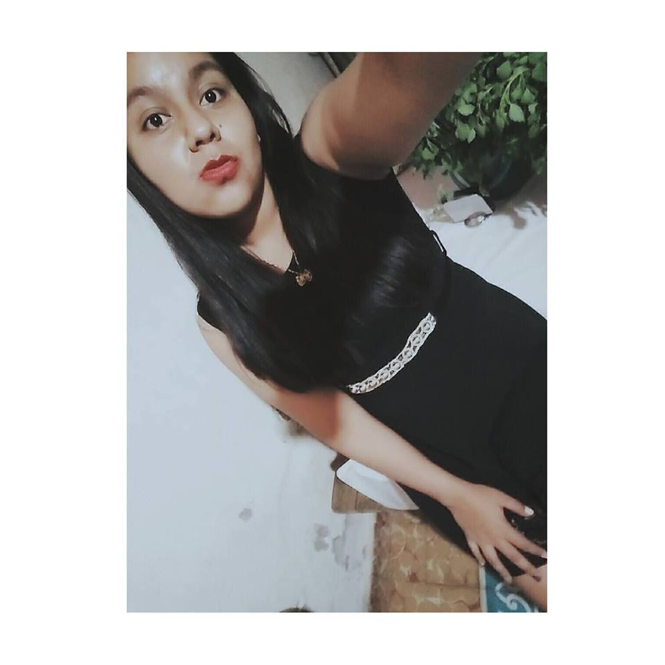

CBTis.No16
CBTIS No. 16
“Nunca consideres el estudio como una obligación, sino como una oportunidad para penetrar en el bello y maravilloso mundo del saber.” Albert Einstein.


“Nunca consideres el estudio como una obligación, sino como una oportunidad para penetrar en el bello y maravilloso mundo del saber.” Albert Einstein.
La Dirección General de Educación Tecnológica Industrial es una dependencia adscrita a la Subsecretaría de Educación Media Superior (SEMS), dependiente de la Secretaría de Educación Pública (SEP) que ofrece el servicio educativo del nivel medio superior tecnológico. El 16 de Abril de 1971 es publicado en el Diario Oficial de la Federación el acuerdo presidencial por el que se modifica la estructura orgánica administrativa de la SEP y se da paso a la creación de la DGETI, en agosto de ese mismo año se publican las funciones que tendrá esta institución y se integran a ella los centros de capacitación para el trabajo industrial, escuelas tecnológicas industriales, los centros de estudios tecnológicos en el Distrito Federal y los centros de estudios tecnológicos foráneos. Actualmente la DGETI es la institución de educación media superior tecnológica más grande del país, con una infraestructura física de 456 planteles educativos a nivel nacional, de los cuales 168 son CETIS y 288 CBTIS.

Información para los estudiantes del plantel, así como los de nuevo ingreso.
En esta sección se describen los diferentes tipos de becas que otorga la Secretaría de Educación Pública (SEP) a través de la Subsecretaría de Educación Media Superior (SEMS)
GOBIERNO FEDERAL • EXCELENCIA PROMEDIO • INGRESO • PERMANENCIA • SALARIO PRÁCTICAS PROFESIONALES • CONTRA EL ABANDONO ESCOLAR GOBIERNO ESTATAL • OPORTUNIDADES

TÉCNICO EN LOGISTICA Ofrece las competencias profesionales que permiten al estudiante realizar actividades dirigidas a la administración de bienes, planificando los suministros destinados al almacenamiento de manera manual y electrónica, la organización de los nodos logísticos para el transporte de mercancías, así como proveer los servicios y atención al cliente sobre los movimientos y los costos de la cadena logística. COMPETENCIAS PROFESIONALES :

MAPA CURRICULAR

PERFIL DE EGRESO: Durante el proceso de formación de los cinco módulos, el estudiante desarrollara o reforzará las siguientes competencias profesionales: o Supervisa el proceso de suministrio de bienes. o Organiza el transporte de mercancías. o Proveve servicio de atencion al cliente sbre los movimientos de logistica. Organiza los costos de la cadena logística y de las competencias de productividad y empleabilidad: o Atencion al proceso o Planeación y organización o Ética profesional o Comunicación efectiva o Trabajo en equipo o Atención al cliente o Relaciones interpersonales OPORTUNIDADES DE INSERCIÓN LABORAL Nuestro país presenta una amplia diversidad de procesos de producción, desde los que utilizan tecnología moderna, hasta sistemas tradicionales; este hecho contribuye a diversificar las ocupaciones, los Comités interinstitucionales de Formación Profesional decidieron utilizar los siguientes: Sectores industriales, comerciales y de servicios, públicos o privados: Escuelas, constructoras, fábricas, centros comerciales, hospitales, inmobiliarias, hoteles, instituciones de crédito, despachos contables y tiendas de autoservicio. Autoempleo
TÉCNICO EN PROGRAMACIÓN Persona con conocimientos, habilidades y actitudes, capaz de ingresar a empresas de desarrollo de software, diseño gráfico, mantenimiento, outsourcing. COMPETENCIAS PROFESIONALES

MAPA CURRICULAR

PERFIL DE EGRESO La formación que ofrece la carrera de Técnico en programación permite al egresado, a través de la articulación de saberes de diversos campos, realizar actividades dirigidas a la: o Instalación y desarrollo de software de aplicación utilizando programación estructurada y orientada a objetos en ambientes web y móviles, con almacenamiento persistente de datos. o Así como la configuración y administración de plataforma e-learning y Comercio electrónico. OPORTUNIDADES DE INSERCIÓN LABORAL. • Desarrolladores de software • Analistas de sistemas • Analista de programas de cómputo • Programador de sistemas de cómputo • Edición de software y edición de software integrada con la reproducción • Escuelas de computación del sector privado • Servicios de diseño de sistemas de cómputo y servicios relacionados • Escuelas de computación del sector público
TÉCNICO EN ELECTRICIDAD La carrera de Técnico en Electricidad permite al estudiante sustentar la demanda de ocupación de Técnicos Electricistas en el sector productivo y de servicios, capaz de diseñar y realizar instalaciones eléctricas residenciales y comerciales, así como proporcionar mantenimiento a máquinas eléctricas. COMPETENCIAS PROFESIONALES

MAPA CURRICULAR

PERFIL DE EGRESO Durante el proceso de formación de los cinco módulos, el estudiante desarrollará o reforzará las siguientes competencias profesionales, correspondientes al Técnico en Electricidad. o Desarrolla instalaciones eléctricas residenciales y comerciales. o Mantiene los motores y generadores de CA y CC. o Mantiene en operación los circuitos de control electromagnético y electrónico. o Mantiene los sistemas de iluminación y de energía renovable. o Mantiene instalaciones eléctricas de media y baja tensión. OPORTUNIDADES DE INSERCIÓN LABORAL. Todas estas competencias posibilitan al egresado su incorporación al mundo laboral o desarrollar procesos productivos independientes, de acuerdo con sus intereses profesionales o las necesidades en su entorno social.

TÉCNICO EN MECÁNICA INDUSTRIAL Profesionista que da mantenimiento a los sistemas de transmisión de potencia utilizando las máquinas herramientas convencionales, de control numérico, máquinas de soldar con arco eléctrico y oxigas auxiliándose de los procesos de ajuste de piezas mecánicas.
MAPA CURRICULAR

PERFIL DE EGRESO Durante el proceso de formación de los cinco módulos, el estudiante desarrollará o reforzará las siguientes competencias profesionales, correspondientes al Técnico en Mecánica Industrial: o Suelda y ajusta piezas mecánicas. o Maquina piezas mecánicas en talador y torno. o Maquina piezas mecánicas en fresadora, rectificadora y cepillo. o Maquina piezas mecánicas por CNC. o Mantiene sistemas de transmisión de potencia. OPORTUNIDADES DE INSERCIÓN LABORAL. Industrias de transformación y procesos como: Textiles, del plástico, petroleras, metalmecánica, automotriz, pesqueras, mineras, siderúrgicas, agrícolas, alimenticia, química, de muebles, forestal, papelera, gráfica y en general todo tipo de industria de la producción y manufacturera que utilice maquinaria entre otras.
DURACIÓN: No se establecen tiempos para concluir los estudios.
¿A QUIÉN VA DIRIGIDO?: A las personas con discapacidad con deseos de iniciar, continuar o concluir sus estudios de bachillerato.
VENTAJAS QUE OFRECE ESTA MODALIDAD: La inscripción es gratuita y sin examen de admisión Se puede combinar el estudio con otras actividades Se puede estudiar a cualquier edad Se brinda asesoría académica gratuita y especializada Se cuenta con equipo y material didáctico adaptados a las necesidades de los estudiantes Se otorgan becas educativas El certificado de estudios tiene validez oficial en todo el país
MODALIDAD: No Escolarizada. Los CAED están basados en el acuerdo 445 de la SEP, que contempla la certificación del bachillerato por evaluaciones parciales.
PLAN DE ESTUDIOS: El plan de estudios de los CAED consta de 22 módulos, que permiten a los estudiantes participar en la definición de su proceso formativo y otras actividades laborales o personales. AL CONCLUIR TUS ESTUDIOS OBTENDRÁS Un certificado de estudios de Bachillerato General con validez oficial en todo el país. PERIODO DE REGISTRO O INSCRIPCIONES No hay periodo específico de registro y las inscripciones se realizan todo el año. REQUISITOS: Certificado de secundaria Certificado de discapacidad emitido por una institución pública (IMSS, ISSSTE, DIF, etc.) 2 fotografías tamaño infantil Identificación oficial (INE, pasaporte o acta de nacimiento) Acta de nacimiento. CURP APOYO DE MATERIALES DIDÁCTICOS: En esta modalidad los estudiantes disponen de diversos recursos didácticos como: audiolibros, glosarios en Lenguaje de Señas Mexicano, textos en Braille, recursos multimedia, software especializado, regletas, punzones, materiales termo formados para alto y bajo relieve, etc.
La institución se preocupa por brindar a los alumnos una buena educación y unas aulas en las que puedan desarrolar sus conocimientos, limpias y con los materiales necesarios para su desarrollo.
La institución además, se preocupa por brindar a los alumnos baños limpios. En todo el plantel hay 3. Para que los alumnos que se encuentran retirados no tengan que trasladarse. Además de que hay un espacio para que los alumnos puedan estacionar sus motos, bicicletas o autos.
 
La institución cuenta con 3 canchas y un campo deportivo para todos aquellos alumnos que estén dentro de las actividades deportivas de la institución.


Cuenta con muchos laboratorios para cada especialidad y para materias como son: física, química, inglés, etc. Cada uno con su material necesario y con personas que se encargan de llevar el control tanto del material como las horas de entrada y de salida de cada grupo y el profesor asigando al aula.
Esta sala cuenta con sillas y mesas para la presentación y uso de los alumnos y maestros.

MISIÓN Formar personas con conocimientos tecnológicos en las áreas industrial, comercial y de servicios, a través de la preparación de profesionales técnicos y bachilleres, con el fin de contribuir al desarrollo sustentable del país.
VISIÓN Ser una institución que proporcione una formación integral y pertinente de acuerdo a las exigencias derivadas de la competitividad mundial y el entorno y vocación local, además de tener la flexibilidad para satisfacer los intereses, aspiraciones y posibilidades de la población que demanda este nivel educativo en nuestro plantel.
BREVE RESEÑA HISTORICA DEL C.B.T.i.s. No. 16 El presente trabajo, tiene como finalidad conocer aspectos sobre la evolución del C.B.T.i.s. No. 16 para lo cual se muestran algunas de sus raíces históricas. El día 08 de Agosto, el comité que representa la Federación de obreros y Campesinos de la región de Atlixco Pué; hizo entrega al Ingeniero Estrada Cuesta en representación del C.A.P.E.C.E., un terreno de 5966.38 metros cuadrados de superficie para la construcción de la Escuela Técnica Industrial No.46 de esta ciudad, procediendo a su edificación. El día 25 de febrero de 1962, en una de las oficinas que forman la H. Cámara de Trabajo C.R.O.M. de Atlixco, empezó a laborar la Dirección de la E.T.I. No. 46., fungiendo como primer Director el C. Ing. Francisco Linares Jiménez, auxiliado por el C. Tec. Oscar Rodríguez Grijalva y el personal administrativo formado por las C. C. Eva Judith Rosas Bonillas, Ma. Cristina Fernández Sosa, Carolina Rosas Zarate y el C. Juan Apatenco Fernández. A los quince días después se hizo el traslado al edificio que ocupa dicha escuela, la cual constaba de 5 salones de clase, 5 talleres y 2 salones de dibujo. El día 1 de Abril de 1962, se iniciaron las labores con tres grupos de secundaria con las especialidades de ajuste de banco y maquinas, herramientas, maquinas de combustión interna, modas, radio y T.V., ELECTRONICA, ELECTRICIDAD Y EQUIPO AGRICOLA, además hubo tres grupos de Preparatoria Técnica Elemental en las especialidad de; maquinas de combustión interna, electricidad, ajuste de banco, equipo agrícola , haciendo un total de 169 alumnos que, en su mayoría eran campesinos y trabajadores de las diferentes fabricas de la región. Los maestros fundadores fueron: • Prof. Carlos Castillo Rodríguez • Profa. María de la Luz Munive Dávila • Lic. David Marroquín • Profa. Esperanza Villegas Cortez • Dr. Salvador Esperón Unzueta • Prof. Pablo Barrera • Prof. Luis Martínez Matamoros • Prof. Marco Antonio Morales Arador • Prof. Sirvió Tulio Guillen Burguete • Prof. Fernando Domínguez Almeida • Prof. Lorenzo Morales
Domicilio Conocido Col. Ricardo Flores Magon. Atlixco, Puebla. CP 74240 Teléfonos: 244-4452543, 244-4462940.

Edmodo es una plataforma tecnológica, social, educativa y gratuita, que permite la comunicación entre los alumnos y los profesores en un entorno cerrado y privado a modo de microblogging, creado para un uso específico en educación. Proporciona al docente un espacio virtual privado en el que se pueden compartir mensajes, archivos, enlaces, calendario de aula, así como proponer tareas actividades y gestionarlas. Fue fundada en Chicago, Illinois, cuando dos empleados del distrito escolar se dispusieron a cerrar la brecha entre cómo los estudiantes viven sus vidas y cómo aprenden en la escuela, Edmodo fue creado para llevar la educación al ambiente del siglo 21, en el 2008 por Jesus Revelles, Yamilka Cedeño y Jorge Pavón.
Duolingo es una plataforma online que te permitirá aprender inglés, francés o portugués (entre otros idiomas) de forma gratuita y entretenida. Duolingo es un sitio web destinado al aprendizaje gratuito de idiomas a la vez que una plataforma crowdsourcing de traducción de textos. El servicio está diseñado de tal forma que a medida que el usuario avanza en su aprendizaje ayuda a traducir páginas web y otros documentos.

Khan Academy (en español Academia Khan) es una organización educativa sin ánimo de lucro y un sitio web creado en 2006 por el educador estadounidense Salman Khan, egresado del Instituto Tecnológico de Massachusetts y de la Universidad de Harvard. Con la misión de "proporcionar una educación de nivel mundial para cualquier persona, en cualquier lugar", es una organización de aprendizaje electrónico en línea gratuita con más de 4.300 vídeos dirigidos a escolares de enseñanza primaria y secundaria sobre matemáticas, biología, química, física,computación e incluso de humanidades como economía, finanzas e historia.

Con esta plataforma complementas las habilidades, destrezas y conocimientos para el submodulo de Desarrolla Aplicaciones Móviles para los estudiantes del cuarto semestre de Programación. El uso de esta plataforma representa una nueva experiencia de aprendizaje que te permite articular conceptos, procedimientos y actitudes que favorecen el desarrollo de tus capacidades así como mejorar tu calificación si la empleas de forma adecuada y constante.

La institución cuenta con oficinas para dar un grato atendimiento a los padres de familia, alumnos y docentes. Si deseas obtener más información del plantel puedes acudir al edificio de servicios escolares de la institución.
Programas de estudio del Bachillerato Tecnológico Formación Básica y Propedéutica
Nombre alumna: Angelica Flores Tellez
Especialidad:"Programación"
Semestre: 4to.
grupo:"F"
No.lista: 09
Periodo Escolar: Febrero-Julio 2017
Profesor: José Antonio Gómez Hernández
Submódulo:DAM(Desarrolla Aplicaciones Móviles)



 1
1 2
2 3
3 4
4 5
5 6
6 7
7 8
8 9
9


 1
1 2
2 3
3 4
4 5
5 6
6 7
7 8
8 9
9 10
10